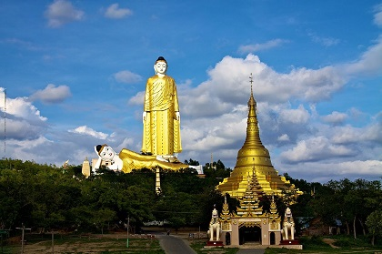

Famous Pagodas All Over Myanmar Countary
Kyaiktiyo Pagoda: Witness The Balanced Rock
It may be small but Kyaiktiyo Pagoda or Golden Rock in Mon State is one of the most striking pagodas because of its location. It’s perched on a boulder that’s covered with gold leaves. The boulder itself seems to defy gravity as it perfectly balances itself on another rock atop Mt. Kyaiktiyo. It’s believed that the boulder remains in its unusual position by virtue of the hair relic enshrined in the pagoda. And, legend has it that the boulder is supported by a strand of hair from Buddha. Whatever the reason, the unusual and dramatic attraction makes it one of the most sought-after Myanmar places to visit. You can get to the pagoda by bus but if you want to get up close with nature, you can hike the 16-kilometer trail. As tiring as it can be, you won’t be alone as pilgrims often choose to walk to the top.
Shwezigon Pagoda
The Shwezigon Pagoda or Shwezigon Paya (ရွှေစည်းခုံဘုရား) is a Buddhist stupa located in Nyaung-U, Myanmar. A prototype of Burmese stupas, it consists of a circular gold leaf-gilded stupa surrounded by smaller temples and shrines. Construction of the Shwezigon Pagoda began during the reign of King Anawrahta (r. 1044–77), the founder of the Pagan Empire, in 1059–1060 and was completed in 1102, during the reign of his son King Kyansittha. Over the centuries the pagoda had been damaged by many earthquakes and other natural calamities, and has been refurbished several times. In recent renovations it has been covered by more than 30,000 copper plates. However, the lowest level terraces have remained as they were. This pagoda, a Buddhist religious place, is believed to enshrine a bone and tooth of Gautama Buddha. The pagoda is in the form of a cone formed by five square terraces with a central solid core. There are footprints below the four standing Buddha statues here. Jataka legends are depicted on glazed terra-cotta tiles set into three rectangular terraces.
Thanboddhay Paya: Colorful Interior & Exterior
You will be left amazed after knowing that this temple boasts 5,823,631 pictures of Buddha in its premises. Now you know it is not famous just like that. Also, the colorful interior and exterior of this temple will impress you. So, make sure you add this to your itinerary while holidaying in Myanmar with your family. This is one of the interesting places to visit in Myanmar.
Bodhi Tataung: For Buddha Statues
Maha Bodhi Ta Htaung (Burmese: မဟာဗောဓိတထောင်, lit. 'a thousand great Bo trees') is a famous Buddhist region and monastery located in Monywa Township, Sagaing Region, Myanmar (Burma). It is famous for the Giant Standing Buddha statue, the third tallest in the world, and for the Great Attitudes of U Narãda, who built the monastery. This Sāsana (religious) site contains thousands of Buddha statues beneath thousands of Bo trees, the Giant Reclining Buddha Statue, Aung Sekkya Stupa, and other large Buddha statues. Currently, a Sitting Buddha Statue, which is expected to become the world's largest Sitting Buddha Statue, is in construction. Many Buddhist monks can study the Buddhist Pariyatti literature at the monastery. Moreover, meditation centres or Vipassãnā centres are opened at this monastic site both for monks and laypersons.